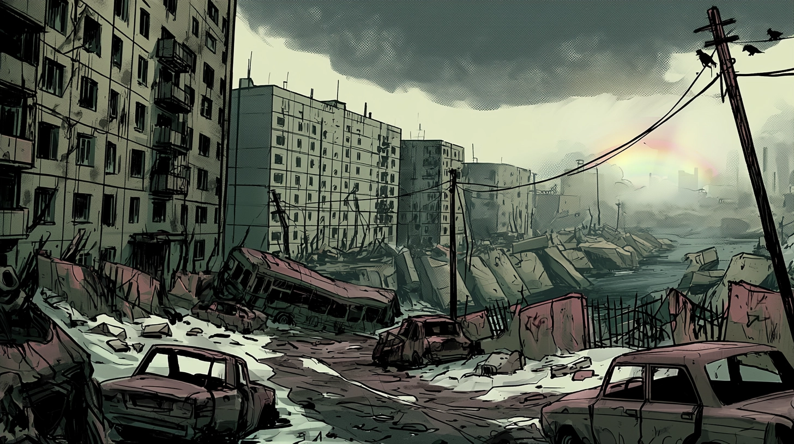

Mutant: Year Zero · Ваншот · Ледяной постапокалипсис
Материалы для игрыЦена Чуда
Путешествие сквозь мертвые окраины разрушенного мира. Исследование невероятно привычного мира, глазами его наследников, которым он не знаком. Короткая и мрачная история, финал которой можно предсказать своей верой в чудеса.
Формат
- Ваншот-знакомство с системой и миром.
- История про надежду, холод и борьбу за жизнь, в окружении уже погибшего мира.
- История про жертвы и лишения. Спасение имеет свою цену.
Для игроков
- Нулевка и генерация персонажей будут в отдельный день до игры.
- Знакомство с миром и системой желательно, но не обязательно.
- Всё нужное расскажем, покажем и обсудим перед стартом.
О чём игра
Мир после конца
Мир давно кончился. От него остались лишь ржавые бетонные кости древних городов, сухие реки мутной воды, сжирающие заживо очаги гнили и вы - упрямый народ, искаженные гнилью и наукой потомки древних людей. Мутанты.
Последний изгиб реки
Ваш Ковчег - корабль, старый и хрипящий словно больной зверь. Много дней шёл по рекам на юг, спасая вас от Великого Хлада. Ваш путь был долог и до поры успешен, но на очередном изгибе реки он сел на мель. Его механизмы замолчали, а топливо окропило берега, словно кровь из разорванного брюха. Зверь пал. Мороз идёт следом: медленно, неотвратимо. Бегство обратилось ожиданием смерти.
Слух о чуде
Едва надежда умерла вслед за зверем, с разведки возвращается иной из Ковчега. Израненный, с глазами, полными бреда и ужаса. Он едва стоит на ногах и повторяет одно: далеко на востоке есть тот, кто способен творить чудеса.
Время на исходе
Вам неизвестно, правда ли это или предсмертный бред. Старик не верит и остальным не велит. Холод надвигается. В Ковчеге понимают, что любой кто отправится в дорогу лишь приблизит собственную смерть.
Веры в чудо нет. Надежду сковывает мороз. Ковчегу осталось слишком мало времени.
Цена попытки
Вы — те, кто решил попытать удачу и отправится за чудом. Может из отчаяния, а может из искреннего желания верить в спасение. Чудо — единственное, что ещё может спасти вас и весь Ковчег.